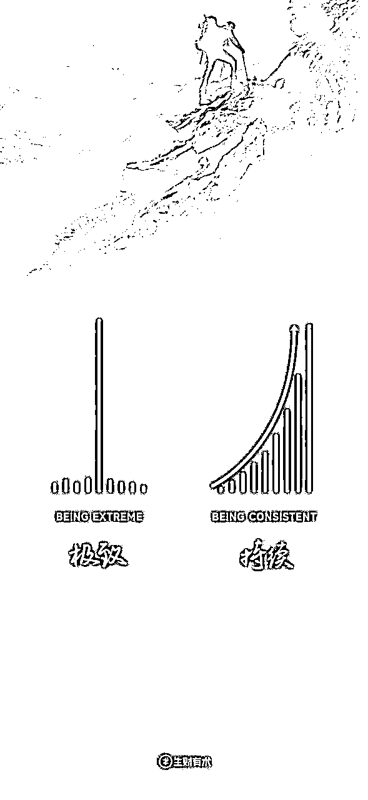

来源：https://vr05r707r7.feishu.cn/docx/DTR9dbmheoJJkbxcbuRc9qCgnxe
大家好，我是生财圈友C罗，产品经理一枚，一名默默潜水的小透明，但每天都会打开生财看一看，安东尼·罗宾说过，你成为了周围人的平均值，我也希望自己不拖后腿，跟上大佬的步伐，非常感谢生财和航海，带我实操，把手弄脏，提升认知。
生财里面的每一个项目都能赚到钱，秘诀不在于教程，而是在于一个字，“干”。
亦仁大哥有这样一句话，“弱化教程，实战下场”，无论是航海手册还是精华帖，不必理解到100%才能动手，也无法理解到100%，看懂20-30%就可以下场实操了。
从去年的5月的航海的前几天就开始入场了，到现在运气还不错，也拿到一些结果，最初的目标是赚回门票钱，没想到现在已经赚了至少30倍门票了。
下面是收益还不错的一些账号，再加上几个几百、一两千收益不算多的账号，算下来，30倍的门票钱应该是有了，而且现在每天还有持续的收益，赚个零花钱还是没问题的。
可能有圈友问，每天半个小时够吗？我想说，唯手熟尔。
其实没有谁用专门的时间来做这些，他们只不过是牺牲了刷抖音，睡觉甚至陪伴家人的时间。大家都是活生生的人，都要面对工作的焦头烂额和生活的柴米油盐。
我就是每天中午吃饭之后，午休之前，放弃了半个小时刷抖音、看剧、看新闻的时间，用来写几篇文章，目前已成为习惯，想想半个小时的投入，赚点零花钱，还能给家人买点礼物，多值得呀！
《孙子兵法》有这样一句话，是故胜兵先胜而后求战，败兵先战而后求胜。这句话是什么意思呢？
胜利的军队总是先有了胜利的把握才寻求同敌人交战，失败的军队总是先同敌人交战而后企求侥幸取胜。指要充分做好战争准备，等有胜利的把握再打。
所以，我们想做成一件事的话，需要先知道这件事做成的关键是什么?那公众号文章能成为爆文的底层逻辑是什么呢？
遵循规律，顺乎自然。在处理事情时应顺应事物发展的内在规律，这样才能取得理想的结果。
特此说明，以下关于底层逻辑的部分论点，比如数据波动、文章&账号标签，参考了该文章：https://mp.weixin.qq.com/s/QVaCbWT-8RMzpb3KDiUB5g
在说底层逻辑之前，先讲两种95%甚至100%的人都会遇到的问题：
1.数据非常稳定，基本没人看：坚持航海21天日更，甚至更久，阅读量还是不超过3位数；
2.数据波动很大，类似心电图：爆过一篇几万或者10万+之后，后面几天阅读量会回归到3位数甚至更低；
对于做了一年多电商推荐产品经理的我，根据之前的一些研究，给大家分析下爆文推荐的逻辑。
我们都知道，两年前，你只能看到你关注公众号的文章，其他的文章是不会出现在你的列表里的，这样会造成什么问题呢？
举个例子，互联网是一个巨大的水系，而每个公众号或平台就像是其中的一个小水池。在早期，这些水池之间的流通仅限于直接关注，这意味着只有那些已经关注你的人才能看到你发布的内容。这种方式很容易导致资源的不平等分配，流量更倾向于流向那些已经拥有大量关注者的“大水池”，而其他的则渐渐干涸。
为了改变这一局面，平台们开始引入一种更加灵活的推荐分发机制，使得内容可以跨越原有的边界，通过搜索、浏览推荐等多种方式到达更广泛的受众。这不仅为创作者提供了更多展示自己作品的机会，也让用户有更多机会发现新兴趣。
推荐机制可以看作是一个双向门，一方面推荐具体的文章，另一方面则是推荐创作者的账号本身。
这就可以回答了上面的两个疑问。
1.数据非常稳定，基本没人看：坚持航海21天日更，甚至更久，阅读量还是不超过3位数；
连续1个月每天都发布新内容，但每篇文章的阅读量却始终只有个位数。这种情况通常意味着你的文章没有得到平台的推荐，简单说就是没有触发平台的推荐逻辑，因而观看人数有限。
2.数据波动很大，类似心电图：爆过一篇几万或者10万+之后，后面几天阅读量会回归到3位数甚至更低；
相对地，如果某篇内容突然爆红，阅读量几万或者10万+，但随后的作品阅读量又回落到3位数，这说明虽然有个别文章获得了推荐，但你的账号作为一个整体并没有被系统持续推荐。
稳定的数据和爆炸性增长的数据背后，是平台复杂算法的决策结果。简单来说，如果你的内容或账号被平台推荐，那么你的作品就有机会被更多人看到。
但并非所有平台的推荐机制都是一样的。有些平台可能会因为一篇热门文章而提升整个账号的可见度，而有些则可能不会。这就是为什么有些创作者在经历了短暂的高光时刻后，又会回到起点，继续寻求更多的关注。
要想让账号被持续推荐，关键在于积累足够的“权重”。虽然有时候我们会听说某个账号的第一篇文章就火了，但这种情况比较少见，更多的是需要通过持续的努力和优质内容的积累来实现。
所以，我们要追求的是，账号被推荐了，那就可以持续的获得源源不断地流量了。
要实现这一点，关键是积累足够的权重。
积累权重并非一朝一夕就能完成，它需要时间的沉淀，以及持续不断地发布高质量的内容。当然，我们偶尔也会听到一些“幸运”的例子，高手分享就有一篇，9天入池的文章，这种就是“天选之号”，但这种情形往往只是特殊情况，我们只见到了成功的个例，而忽视了那些尝试了却未能获得同样成效的众多案例。
因此，目标不应该只是追求一两篇爆文，而是要让账号能够持续地获得高收益。在这个过程中，我们需要避免只依赖个别成功的案例来制定策略，因为成功的路径对每个人来说都是独一无二的。
其实道理很简单，我们认为一个人靠谱或者优秀，肯定不是仅仅因为他把一件事做好了，而且能坚持的把事做好，这也是最简单的道理。
“教练，我昨天阅读量新高了，看看我的账号是不是入池了？”，
“教练，我上周每天都是几万的阅读，这周直接变成两位数了，看看我的账号是不是掉出池子了?”
相信这个问题大家都问过，那你为什么入池呢？大概率是量变引起质变，就像吃饭一样，是一口一口吃才会饱，而不是只吃你感觉饱了的最后一口。
那为什么掉池问题，其一是违规，就像信誉分一样，你需要积累，被扣除了积分，就需要重新积累，怎么积累的呢？无非就是更新文章。
那如果没有违规，掉池的原因只有一个，就是质量不够。
那有人可能要说了，我就是照着10W+的文章写的，人家能爆说明质量没问题呀！
打住，重点来了！这恰恰就是问题所在，你照这10W+的文章写的，说明平台已经有这样水平的文章的，如果你的质量和他一样，那人家比你更早发表了，你自己得不到最多的流量了。所以说，对标10W+的文章没毛病，说明这个话题还有流量，但是既然你在时间上已经落后了，那就要在质量上做超越了。
这就是为什么对标10W+，但是还没有流量的原因，我也是反思了很久才明白这个到底的。
说了这么多逻辑，那文章被推荐的逻辑是到底是什么呢？其实是标签。
举个例子，你刷抖音，是不是基本都是自己喜欢的内容？越看什么，系统越推什么，因为你被打上了标签，比如“爱看美女视频”，“爱旅游”，“爱看吃播视频”，“宝妈”，“宝爸”等等一系列的标签。
所以文章推荐，是把有标签的文章或者账号，推给有相同标签的人。
这里，文章标签一定是早于账号标签的，只有文章的标签积累到一定程度，才会给账号打上标签，通俗点解释，你今天吃炸鸡，不代表你喜欢炸鸡，但是你一周吃5次炸鸡，那你这个人（等同于账号）就被打上了“爱吃炸鸡”的标签了。
那我们就知道了，新账号是没有标签的，这也能解释前期会出现今天这篇文章10W+的阅读，明天又回归到3位数的逻辑了。
等到文章积累足够多足够精准的标签，账号也被打上相应的标签。所以，我们看到了一些账号，你觉得文章质量也就一般呀，为什么还有一定的阅读量呢？那这个账号大概率持续了一段时间的日更，就是这个账号已经已经被打上标签了，只要没什么违规，就会推送到特定的人群里了。
所以每天阅读量波动是正常的一件事，你能做的就是持续输出高质量的文章，让账号打上标签，来获得稳定的流量。
我非常喜欢生财的这两张图，理想很丰满，现实很骨感，大A股都在一直跌跌不休，做项目怎么可能一直赚呢？而且我也不是追求一时的收益，而是要在项目中锻炼自己的能力，复制到其他项目中，就好比爆款的逻辑都是通用的，满足读者的需求就好了。

我们再来看一张图，<微信看一看个性化推荐算法>，具体出处真的找不到了，有知道的圈友可以告知一下。
我们仔细观察这张图，哪两个字出现的次数最多？
没错，“内容”。
精选内容库-多重干预机制-生态保障-内容去重＝优质、不重复、不违规。
内容去重-兴趣打散＝优质且稀缺内容。
再来看看GPT4的回答，让AI给个建议我们瞧瞧。
圈重点了，我们不要本末倒置，说到底，文章的质量才是最关键的。持续输出稀缺优质的内容，收获流量是早晚的事儿~
种一棵树最好的时候是在10年前，其次是在现在。
微信的生态，决定了这个项目的永远值得做下去，现在人可以不玩抖音，不看快手，不刷今日头条，但是不能没有微信。
你现在刷一下你的公众号文章，是不是稍微往下拉一拉，就会出现阅读10万+的字样？而且很多都是当天或者近两天的文章，而且有些文章充满了AI的味道，所以也说明了，入局还不晚。
而且，公众号爆文航海，一直是变现率最高的一条船，数据就是就好的证明，你有理由相信你也可以做到。
就趁现在，把手弄脏，你肯定也能写出10万+的文章。
我为什么选公众号爆文呢？因为我自己也日更公众号一年多，对于公众号相关的内容和流程算是比较了解了，这样就能更好的驾驭这条船。
从自己擅长和合适的方向出发，会减少很多阻力，也容易拿到正反馈，这是你天生的优势，不擅长的事儿，虽然你也可能能做好，但你就是要多花好几倍功夫。
另外咱没有慧根，那就“会跟”，亦仁大哥都指明了方向，抄作业就好了。
我非常清晰的记着，我发布的第一篇带流量主的公众号是在航海之前的2023年5月7号，当时有2个号，选择的方向是情感和律例，真的是信心满满的开始了航海，第11天入池，情感的号入池了，单篇阅读量超过了5000，我以为这是一个好的开始，但没想到，这就是巅峰了，未来的1个月多，都没有阅读量超过5000的文章。
仔细想想，世界就是公平的，拿你有的，换你要的。走了这么久，回头看，那时候没有流量也是正常，因为是纯洗稿，还被摘过原创，也有一些其他方向的违规，被关进小黑屋也是正常。
到了6、7月份，养老金细则调整，出现了一大批相关爆文，所以我就立刻改了方向，也就是踩着热点，实现了从0到0.1这个过程，出了几篇3-5W的文章，但是我心心念念的10W+迟迟没有来。
不过也就是这几篇过万的文章，让我充实信心，也感谢那时候没有放弃的我，才能够有现在小小的收获。
看到了正反馈之后，到了8月份，我又搞来了2个新号，就这样日更四个号，每天忙活的不亦乐乎，最初的时候还是靠找一些10W+账号，洗稿，就这样又持续了3个月，账号不温不火，几千到几万的流量倒是有一些，但是10W+看起来海曙遥不可及。
只有11月的某一天，我看到了这样一句话，让我醍醐灌顶。
美团CEO王兴，有一句非常经典的话:“便宜的打败贵的，质量好的打败质量差的，认真的打败轻率的，耐心的打败浮躁的，勤奋的打败懒惰的，有信誉的打败没信誉的。
就这样，我换了创作模式，从洗稿，转变成了从上游找素材，然后用AI原创的方式，结果很快的收到了奇效，不到半个月，第一篇10W+来了，未来的一个月，又接连跑出了2篇30W+，6篇10W+，13篇5W+的文章。
所以你们看，原创的打败洗稿的，内容好的打败内容差的，标题吸引人的打败平平无奇的，早写的打败晚写的，这个世界的道理就是这么简单。
前几天我又打开了航海手册看，真的让我感慨，原来手册里早已经把简单的道理写的清清楚楚了，所以，在拿到结果之前别想着一些奇技淫巧，听话照做，巨人都把肩膀给你了，你为何不站上去呢？
生财的精华贴，也有不少公众号爆文的相关的，所以下面我尽量不讲重复的内容，从我自身的总结，希望能对圈友提供一些帮助。
在这里先感谢几位圈友，他们的分享我反复拜读，受益匪浅，排名不分前后。
1、二爷（Feng）https://t.zsxq.com/18bYxQ6ml
2、程序员田同学，https://t.zsxq.com/18TkOx8OA
3、妞妞，https://t.zsxq.com/18wH3ZlV2
4、大熊猫，https://t.zsxq.com/18LTrdIXO
也要特别感谢亦仁大哥，在我刚收益几百块的帖子下面鼓励我，也给足了我信心和动力。
先强调一点，每个赛道都能做，即使很卷的赛道依然有人能做出成绩，只不过确实有难度的差异以及收入的高低之分，下面这些赛道都是我近一年写的，也能看到一些圈友的一些反馈，希望能够为大家提供一些思路。大家也可以关注风向标，挖掘一些最近值得写的赛道。
| 领域 | 具体分析 | 推荐指数 |
|---|---|---|
| 养老金 | 每年6-8月，政策调整的时候，流量很大，其余时间也可以写写退休相关、老年健康相关 | 5颗星 |
| 职场-职场经验 | 结合一些热点话题，会持续爆，ecpm也比较高 | 5颗星 |
| 健康 | 结合中医和一些热点，流量不错，ecpm也比较高 | 5颗星 |
| 地理 | 话题多，细分领域容易爆，ecpm中等 | 5颗星 |
| 职场-体制内相关 | 但风险高，ecpm也比较高，但可能违规 | 4颗星 |
| 律例 | 相对来说不卷，不过总写一些犯罪的案例，可能会影响心情 | 4颗星 |
| 娱乐明星 | 需要高质量一些的文章，产出文章的耗时长，但是猜中了热点，流量巨大 | 4颗星 |
| 情感 | 比较卷，ecpm也比较低 | 3颗星 |
| 名人名言 | 比较卷，ecpm也比较低 | 3颗星 |
| 头像&神回复 | 不稳定，ecpm低 | 3颗星 |
| 文案 | 尽量别开原创，ecpm也比较低 | 3颗星 |
| 影评 | 结合当下的电视剧或者电影进行剖析，产出文章的耗时长，耗时长，ecpm也不高 | 3颗星 |
另外，“互联网+”这个词大家都听过，我们也可以把自己的方向融入一些其他方向的东西，这样获得推荐的概率会更大。
比如写职场经验，那可以结合热点，比如某某公司裁员；也可以结合最近的退税；也可以结合两会的一些代表的提议等等，思路打开，不局限在某一个方向。
另外，切忌写了几天发现没流量就换方向，如果大家仔细看了上面第三部分，那就能清楚这个逻辑的，每一篇文章都在为你的账号积累权重，来回换方向，系统都不知道你这个账号到底是什么方向的了，那还怎么给你推荐呢？
要相信，每个赛道都是有10W+的机会的，所以没有最好的，只有最合适的，选择你觉得最合适的，坚持写就好了。
总会有一些圈友问怎么找素材，怎么搭建素材库？这些在手册里也都提到了，我的原则是用最高效的方法收集素材，所以分享下我是怎么找到和存放随材的。
其一是各大热搜榜，百度、今日头条、微博、知乎、网易等等，每天都有源源不断的素材；
比如今日热榜 - 全站热榜
比如tophub.today
其二是你在微信的搜一搜，搜索你要写赛道的关键词，看几篇文章，然后刷公众号的推荐列表就可以了，你会看到非常多的10W+的文章，因为这时候系统已经把你打标签了，认为你喜欢这类的文章，自然而然就给你推送了。
我存放素材的方式很简单，不搞飞书或者表格，我觉得比较耗时，我基本都是自己的微信群（面对面建群，输入密码之后就是一个只有自己的群了），看到合适的就扔到里面就可以了，根本不需要抽出固定的时间来收集，通勤、吃饭、睡前、甚至是上厕所的时候，刷一下，就基本够几天用的了。
ecpm是什么？字面含义是广告千次曝光收益，翻译过来就是读者看一次给你多少钱
先给大家看两组数据，第一张20231222-20231231文中广告ecpm的情况，基本上都是低于2的。
再看下20240101之后的ecpm，是不是翻了3倍以上？那我做了什么呢？
就是适当的调整了下广告的类目，这个调整没有明确的规则，目前看对我的账号都是有提升的，当然了，也不确定是否对每个账号都有效。
调整的规则也很简单，就是根据你的账号的赛道读者的用户画像，选择他们可能感兴趣的广告，这样才有可能提高曝光率和点击率。
除了这个，比如提高文章完读率，提高读者停留时间，提高点赞、收藏、转发都可以提升ecpm，之前有位圈友分享过，https://t.zsxq.com/18LTrdIXO，大家可以参考。
据说今年这方面抓的比较严，有人建议说尽量选真实的卖家，不要机器刷的，这样肯定更保险。TB会有很多的选择，30-200不等，30就是机器粉，200的基本是真人粉。
不过我一直是用机器刷的，不过我刷完500粉丝，会等7-10天在开通流量主，一直没有违规过，大家可以根据自己的需要选择。
大家文章里的图片尽量不要用有版权的，这样可能会收到侵权通知，会很麻烦，所以可以用公众号自带的无版权图片，也可以自己用AI生成，现在市面上很多免费可以用的，大家也可以参照【AI绘画】航海手册里面的一些软件。
大家能发现有一个赛道，是XX说，比如莫言说，鲁豫说等等，你有没有想过，自己开创一个XX说呢？
那你有没有想过为什么别人没写呢？很可能是不能写的，所以大家要注意这点，有些人是不能写的，比如任正非说，别问我为什么知道哦。
这时候大家直接承认，删除文章就好了，这件事就到此为止了，类似的侵权都可以这样处理，不过后续的流量大概率被影响的。
大家洗爆文的时候，最好检测一下重复度，尽量要提高原创度，这不仅能防止违规，也够提高被推荐的概率，而且原创和非原创的ecpm差异非常大的。
另外被摘掉原创是不会被扣除收益的，但是超过3次，会影响后续的流量的，虽然没有明确的规则，但这就和狼来了的故事一样，过了3次就没人相信你了。
君子爱财取之有道，我们赚钱也是要有底线的，要做一个自媒体人的基本素养，就是不要造谣，不能为了博人眼球，故意夸大和造谣，这种吃人血馒头的行为是不可取的，而且也是很容易被违规的，甚至被请去喝茶。
我的账号发布时间，主要集中在早上7点，中午12点，下午6点，晚上9点，整体观察下来，都有爆款也都有波动，既然平台没有明确哪个时间点会获得更多的流量，那就不必纠结。
但我们尽量保持每天固定的时间点发，不要今天7点，明天12点，后天晚上9点，特别是对于有了一些粉丝的账号，读者可能习惯了固定时间来浏览你的文章了，所以保持规律，没坏处。
这个问题很多圈友问过，也可以理解，毕竟初期没有流量的这段时间，有些焦虑情绪是很正常的。
不过建议大家不要这么做，默默更新就好了，因为绝大部分账号，不需要这个操作也是可以进池的，反而我有两个账号，家人知道后，每天固定的那几个人浏览和点赞，反而流量不好。
我猜测腾讯有一套检测机制，不排除这种行为被认定为流量主作弊，毕竟也要保护商家的权益。
之前看到过这样的行为，有人看到一些文章，和自己的主题相似，别人的就是10W+，而自己的却是平平无奇，然后就心生嫉妒，随手举报。
奉劝大家不要这么做，因为，吹灭别人的灯，并不会让自己更加光明；阻挡别人的路，也不会让自己行得更远。
有句话说得好，富人常洗脑，穷人常洗澡。富人们总会学习人家的优点来改变自己的经营方式，提高自己的收入。我们要做就是分析为什么别人的文章能10W+，然后应用到自己的实操里。
再好的教程，也不是完美的，一定要尽早进入实战，并不是急于求成，而是让自己在行动中得到反馈，让自己学得更好，更能解决实际问题。
当我们的文章石沉大海，无人问津，自我怀疑的阴影开始笼罩我们的思绪。这种情境，我相信，并不只是少数人经历过。
在众多努力中，我们或许忽略了这样一个事实：据新榜2022年的统计数据显示，在4亿篇文章中，只有36万篇达到了10万+的阅读量，占比不足0.09%。而不足1万阅读量的文章高达3.9亿篇，占据了总数的98.6%。
这些数字可以清楚的告诉我们，低阅读量是常态，而非失败。
写作，就像是一场游戏，每完成一篇作品，我们都能获得巨大的成就感。其次，我们要设想未来的美好愿景，让写作成为我们的选择，而非负担。
爆款的逻辑就在那里，很简单，就是满足人性的需求，契合人类需求的话题永远会火。
具体请参考手册里的“开幕雷击”七要素，这些元素，可以绕开人类的理智，直达人性的底层需求。
所以，写文章不要自嗨，不要你觉得好，而是要读者觉得好。
理论上，你如果不能比普通人多坚持100%，就没道理多获得10%的收益。至少开始的时候是这样的。一旦突破某个临界点，你就有可能倒过来，多付出10%，却可以获得10倍的好运。
坚持本身就是一种收获，积极撞击世界，成败皆是反馈。即使短期内看不到成效，长期坚持下去，总会有所回报。
无人问津也好，技不如人也罢，我们都要试着安静下来，去做自己该做的事，而不是让内心的烦躁、焦虑、毁掉你本就不多的热情和定力。
所以一定要相信，春种秋收，三四月做的事情，七八月自有答案，坚持胜过时机，执行打败运气。
希望各位圈友，在即将到来的航海里，都能扬帆起航，多多写出10W+，那泼天的富贵，为什么不能属于你呢？
尾声，内容就到这里哈，
希望没有浪费各位的时间，祝各位生财有术！
这篇文章首发于「生财有术」的知识星球，如果你是通过其它渠道看到的这篇文章，可以考虑付费加入「生财有术」去阅读更多类似的文章，提高赚钱的能力，加入「生财有术」后如果不满意，可以三天无理由全额退款。